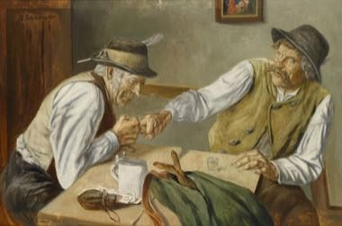
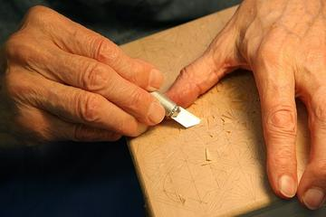

Home / Classical Worlds / Northern and Eastern Europe
Encyclopedia ID 1452
Finger Hooking
Also known as Fingerhakeln

Two players hook one finger in a leather loop across a table and try to drag the opponent over.
Heritage note
Part of the living heritage of Germany, Austria. It is presented as sport and skill, never as real fighting.
Origins
Usually placed in the era of Classical Worlds (about 1000 BCE to 500 CE), although its exact origins are uncertain, within the cultural world of Northern and Eastern Europe.
Sources
Related entries


Tuvan Throat Singing
Mongolia +1 · Archery, throwing and target gamesPlay preview · in the Wind & Voice of the World appFinger pulling
Austria · Street and playground games

Alpine Yodel
Switzerland +2 · Archery, throwing and target gamesPlay preview · in the Wind & Voice of the World app
More from Germany

Black Forest Cuckoo Clock Workshop
Germany · Crafts and making
Blacksmith's Forge
United Kingdom +4 · Crafts and makingPlay preview · in the Woodcraft & Metal of the World app



Clockwork Movement Builder
Germany +2 · Puzzles and mind games